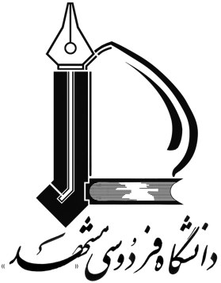
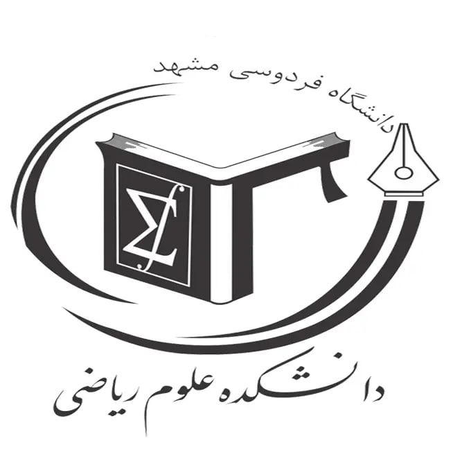

دانشگاه فردوسی مشهد
یادگیری ماشین روی گراف
Graph Data Preprocessing & Feature Engineering
محمد باغبانزاده

دانشکده علوم ریاضی
پردازش گرافها یکی از چالشبرانگیزترین کارها در یادگیری ماشین و علوم داده است، زیرا:
به همین دلیل، مقالهٔ A Survey of Graph Pre-processing Methods بر این تأکید دارد که:
پیشپردازش گراف (GPP) اگر درست انجام نشود، میتواند از کل فرایند یادگیری سنگینتر شود.
Graph500 یک بنچمارک جهانی برای ارزیابی الگوریتمها و سیستمهای پردازش گراف است. معمولاً کارهایی مثل BFS روی گرافهای عظیم (با میلیاردها یال) روی ابرکامپیوترها اجرا میشود.
در مقاله آمده است که:
یعنی:
پس GPP گاهی هزار برابر سنگینتر از خود الگوریتم است.
GPP برای بهبود سه چیز انجام میشود:
مقاله روشها را در دو دیدگاه اصلی دستهبندی میکند:
پارتیشن کردن یعنی گرهها یا یالها را طوری به چند بخش تقسیم کنیم که:
در سیستمهای توزیعشده، وقتی دو گره در دو پارتیشن مختلف قرار میگیرند، ارتباط آنها هزینهٔ زیادی دارد.
پس کاهش edge-cut بسیار مهم است.
در این روش گرهها بین پارتیشنها تقسیم میشوند و هر یالی که دو سرش در پارتیشنهای مختلف باشد «بریده» محسوب میشود.
هدف: کاهش تعداد edge-cut برای کم کردن هزینهٔ ارتباط بین پارتیشنها.
در این روش یالها بین پارتیشنها پخش میشوند و گرهها ممکن است در چند پارتیشن تکرار شوند (replicate).
این روش برای گرافهایی که گرههای با درجهٔ خیلی بالا دارند مناسبتر است، چون بار پردازشی بین پارتیشنها بهتر پخش میشود.
مخصوص گرافهای خیلی بزرگ که نمیشود یکباره وارد حافظه کرد.
گراف به صورت جریان (یالبهیال یا گرهبهگره) میآید و باید همان لحظه تصمیم بگیریم در کدام پارتیشن قرار بگیرد.
مناسب دادههای آنلاین و گرافهای پویا.
import networkx as nx
import pymetis
# گراف نمونه
G = nx.karate_club_graph()
n_parts = 4
# ساخت adjacency list مناسب pymetis
adj = [list(G.neighbors(i)) for i in G.nodes()]
edgecuts, parts = pymetis.part_graph(n_parts, adjacency=adj)
print("Edge cuts:", edgecuts)
for node, part in zip(G.nodes(), parts):
print(f"Node {node} -> Partition {part}")
در GNNها، کامپیوتر باید تمام همسایههای گرهها را بررسی کند.
در گرافهای واقعی (خصوصاً شبکههای اجتماعی)، این تعداد ممکن است میلیونها باشد ➜ پس آموزش غیرممکن میشود.
Sampling کمک میکند:
mini-batch ایجاد کنیم
حافظه مصرفی را کم کنیم
سرعت آموزش را زیاد کنیم
Node-wise (مثل GraphSAGE)
Layer-wise (مثل FastGCN)
Subgraph-based (مثل GraphSAINT)
from torch_geometric.datasets import Planetoid
from torch_geometric.loader import NeighborLoader
dataset = Planetoid(root="data/Cora", name="Cora")
data = dataset[0]
loader = NeighborLoader(
data,
input_nodes=data.train_mask,
num_neighbors=[10, 5], # نمونهگیری همسایهها در هر لایه
batch_size=64,
)
for batch in loader:
print("Batch nodes:", batch.x.size())
print("Batch edges:", batch.edge_index.size())
break
کاهش تراکم گراف، کاهش محاسبات و کاهش ارتباطات.
یالهای مهم نگه داشته میشوند، بقیه حذف میشود
مثل DropEdge
هدف کاهش هزینهٔ محاسبه است بدون توجه زیاد به مدل
import torch
def drop_edge(edge_index, drop_rate=0.2):
m = edge_index.size(1)
mask = (torch.rand(m) > drop_rate)
return edge_index[:, mask]
# edge_index : [2, number_of_edges]
new_edge_index = drop_edge(edge_index, 0.2)
اگر چند گره همسایههای تکراری دارند، یا محاسباتشان مشابه است، آنها را:
merge کنیم
cache کنیم
یا نتایج میانی را reuse کنیم
بدون اینکه اطلاعات حذف شود.
این روش در سیستمهای GNN با سربار ارتباطی زیاد بسیار مفید است.
cache = {}
def aggregate_with_cache(node, adj, X):
neigh = tuple(sorted(adj[node].tolist()))
if neigh in cache:
return cache[neigh]
aggr = X[adj[node]].mean(dim=0)
cache[neigh] = aggr
return aggr
کاهش حافظه
کاهش پهنایباند
افزایش سرعت روی CPU/GPU/FPGA
Degree-free (معمولی)
Degree-aware (در گرافها خیلی مهم میشود)
import torch
def quantize_8bit(x):
x_min = x.min()
x_max = x.max()
scale = (x_max - x_min) / 255.0
q = torch.round((x - x_min) / scale).clamp(0, 255).to(torch.uint8)
return q, x_min, scale
def dequantize_8bit(q, x_min, scale):
return q.float() * scale + x_min
گرافها معمولاً دسترسی غیرپیوسته به حافظه ایجاد میکنند.
اگر گرههای مرتبط مجدداً شمارهگذاری شوند:
locality بهتر میشود
cache miss کاهش مییابد
سرعت کل الگوریتم افزایش مییابد
import networkx as nx
G = nx.read_edgelist("graph.txt", nodetype=int)
deg = dict(G.degree())
sorted_nodes = sorted(G.nodes(), key=lambda n: deg[n], reverse=True)
mapping = {old: new for new, old in enumerate(sorted_nodes)}
G_reordered = nx.relabel_nodes(G, mapping)
اینکه داده بهصورت Sequential Access درآید.
در GraphChi شاردها استفاده میشوند
در GridGraph گراف به بلوکهای 2D تقسیم میشود
import torch
def make_shards(edge_index, num_shards=4):
N = int(edge_index.max().item()) + 1
shard_size = (N + num_shards - 1) // num_shards
shards = []
for i in range(num_shards):
lo = i * shard_size
hi = (i + 1) * shard_size
mask = (edge_index[0] >= lo) & (edge_index[0] < hi)
shards.append(edge_index[:, mask])
return shards
در گرافها ویژگیهای خوب خیلی وقتها از خود مدل GNN مهمترن!
تا حالا شاید فکر میکردیم مدلهای گراف خیلی هوشمندن و خودشون همه چیز رو یاد میگیرن،
ولی واقعیت اینه که اگر ویژگیهای اولیه درست نباشن،
بهترین GNN دنیا هم نمیتونه عملکرد خوبی داشته باشه.
این ویژگیها از ساختار توپولوژیک گراف استخراج میشوند و مستقل از هر نوع embedding یادگرفتنی هستند.
تعداد همسایههای یک گره.
این ویژگی نشانهای از اهمیت، مرکزیت یا تأثیرگذاری یک نود در شبکه است.
گرههای پراتصال معمولاً در بسیاری از گرافها نقش «هاب» دارند.
نشان میدهد یک گره تا چه حد روی مسیرهای کوتاه قرار میگیرد.
این ویژگی برای کارهایی مثل تحلیل شبکههای اجتماعی، تشخیص گرههای مهم، و تشخیص گرههای واسط کاربرد زیادی دارد.
اندازهگیری میکند که همسایههای یک گره چقدر با یکدیگر مرتبطاند.
برای تحلیل ساختارهای محلی مثل مثلثها و اجتماعها کاربرد دارد.
سنجشی از «اهمیت» گره بر اساس مدل پخش تصادفی گوگل.
برای تشخیص نودهای تأثیرگذار در شبکههای اجتماعی و لینکتحلیل استفاده میشود.
import networkx as nx
deg = dict(nx.degree(G))
clustering = nx.clustering(G)
pagerank = nx.pagerank(G)
ویژگیهای طیفی (Spectral) و موقعیتی (Positional) اطلاعات بسیار مهمی از جایگاه گرهها در کل ساختار گراف به ما میدهند.
به طور عامیانه؛
برای این کار از ماتریس Laplacian استفاده میکنیم.
این ماتریس رو اگر Eigenvectorهای اولش رو بگیریم،
همونها تبدیل میشن به یک جور مختصات هندسی برای گرهها.
مبنای لاپلاسیان:
این لاپلاسیان نرمالسازیشده باعث میشود وزن گرههای پراتصال (hub nodes) کنترل شود.
مقادیر ویژه (eigenvalues) و بردارهای ویژه (eigenvectors) آن اطلاعات هندسی دربارهٔ گراف میدهند.
eigenvectorهای مربوط به مقادیر ویژهٔ کوچک، جایگاه گرهها در ساختار کلی گراف را مشخص میکنند
مثل:
embeddingهای طیفی (spectral embedding)
تقسیمبندی گراف
ویژگیهای موقعیتی مفید برای GNN
به همین دلیل در بسیاری از مقالهها از Laplacian eigenvectors بهعنوان positional embedding برای گرهها استفاده میشود.
from scipy.sparse.linalg import eigsh
import numpy as np
L = nx.normalized_laplacian_matrix(G)
vals, vecs = eigsh(L, k=8) # اولین 8 مؤلفه
positional_emb = vecs
ایده: حرکت تصادفی در گراف (random walk) مسیرهایی را ایجاد میکند که اطلاعات ساختاری و محلی را مدل میکند.
مدلهایی مثل node2vec و DeepWalk این ایده را به embedding تبدیل میکنند.
به طور عامیانه؛
ما یک راهرونده تصادفی رو روی گراف راه میاندازیم،
مسیرهایی که طی میکنه تبدیل میشن به یک نوع توصیف از ساختار شبکه.
این روشها نهتنها اطلاعات محلی رو میگیرن،
بلکه ویژگیهای سطحبالا رو هم خوب مدل میکنن.
به همین دلیل embeddingهای خروجیشون (که همون فیچرها هستن)
برای GNN بسیار مفید و حتی گاهی ضروری هستن.
چرا این ویژگیها مهماند؟
اطلاعات local + global را باهم ترکیب میکنند
نسبت به ساختارهای پیچیدهٔ گراف حساساند
برای مدلهای ML معمولی (SVM، MLP) و GNNها بسیار مفیدند
مثل node2vec / DeepWalk
(در اینجا فقط نمونهٔ استفاده از کتابخانهٔ node2vec)
from node2vec import Node2Vec
node2vec = Node2Vec(G, dimensions=16, walk_length=20, num_walks=200)
model = node2vec.fit()
emb = model.wv
همیشه گرهها همهی اطلاعات رو ندارن؛
برای گرافهای heterogeneous مهم است:
نوع رابطه
وزن
timestamp
تعداد مثلثها
import networkx as nx
for u, v in G.edges():
G[u][v]["triangles"] = len(list(nx.common_neighbors(G, u, v)))
GPP بخش عظیمی از هزینهٔ پردازش گراف را تشکیل میدهد.
با Partition، Sampling، Sparsification، Reconstruction و… میتوان کارایی را چند برابر افزایش داد.
Feature Engineering بخش مهمی برای عملکرد GNN است.
انتخاب روشها باید بسته به نوع کار، اندازهٔ گراف و سختافزار باشد.